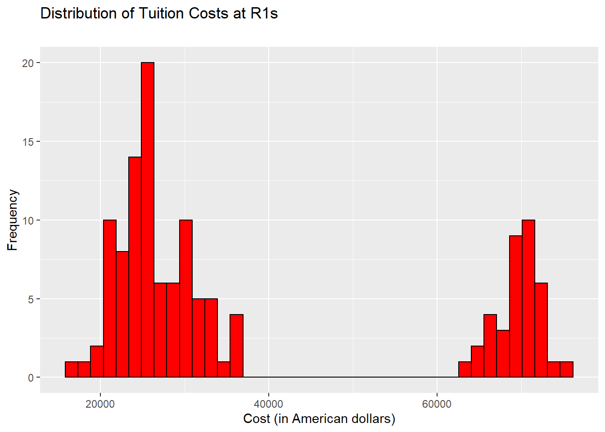
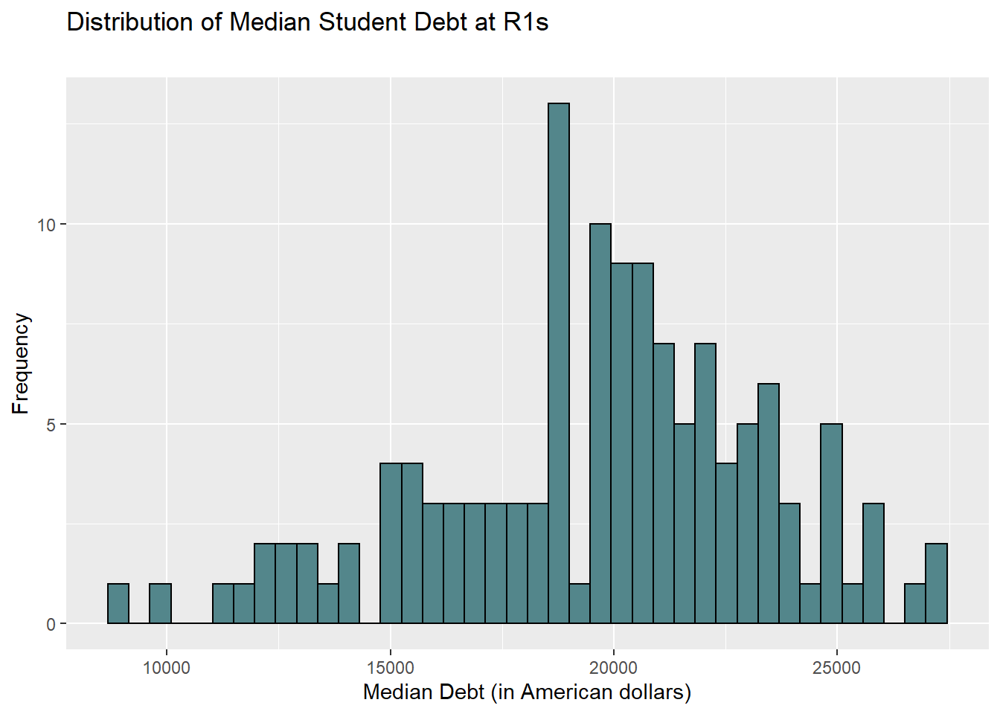
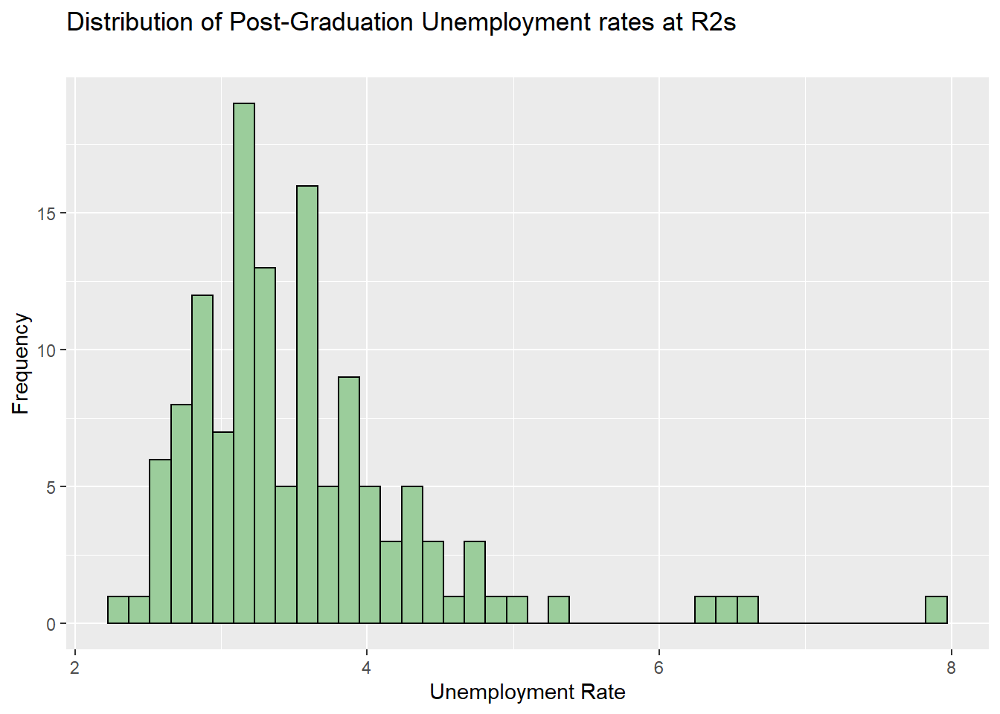

Section 5 Analysis
5.1 Import Packages
5.2 Transform Datasets
finR <- fin[fin$year == "latest",]
finR1 <- fin[fin$r_status == 1 & fin$year == "latest",]
finR2 <- fin[fin$r_status == 2 & fin$year == "latest",]
demR <- dem[dem$year == "latest",]
demR1 <- dem[dem$r_status == 1 & dem$year == "latest",]
demR2 <- dem[dem$r_status == 2 & dem$year == "latest",]
finR <- subset(finR, university %in% demR$university)5.3 Descriptives
## Min. 1st Qu. Median Mean 3rd Qu. Max.
## 0.0573 0.3900 0.5072 0.5129 0.6763 0.8408## [1] -0.2433317## [1] 2.272319## Min. 1st Qu. Median Mean 3rd Qu. Max.
## 0.0000 0.4507 0.6242 0.5529 0.7326 0.9348## [1] -0.9043165## [1] 2.917131## [1] "Tuition cost"## Min. 1st Qu. Median Mean 3rd Qu. Max. NA's
## 16927 24464 28408 38695 66923 75735 1cost_hist1 <- ggplot(finR1, aes(x =costt4_a)) +
geom_histogram(bins = 40, color = "black", fill = "red") +
labs(title = "Distribution of Tuition Costs at R1s",
subtitle = "",
x = "Cost (in American dollars)",
y = "Frequency")
cost_hist1
## Min. 1st Qu. Median Mean 3rd Qu. Max. NA's
## 11299 21266 24098 33613 51214 71875 4
## [1] "Student debt"## Min. 1st Qu. Median Mean 3rd Qu. Max.
## 8700 17634 20000 19652 22027 27000debt_hist1 <- ggplot(finR1, aes(x = grad_debt_mdn)) +
geom_histogram(bins = 40, color = "black", fill = "cadetblue4") +
labs(title = "Distribution of Median Student Debt at R1s",
subtitle = "",
x = "Median Debt (in American dollars)",
y = "Frequency")
debt_hist1
## Min. 1st Qu. Median Mean 3rd Qu. Max. NA's
## 5500 20930 23167 22719 25000 30500 5debt_hist1 <- ggplot(finR2, aes(x = grad_debt_mdn)) +
geom_histogram(bins = 40, color = "black", fill = "cadetblue3") +
labs(title = "Distribution of Median Student Debt at R2s",
subtitle = "",
x = "Median Debt (in American dollars)",
y = "Frequency")
debt_hist1
## [1] "Unemployment Rate"## Min. 1st Qu. Median Mean 3rd Qu. Max.
## 2.190 2.965 3.200 3.293 3.605 5.020unemp_hist1 <- ggplot(finR1, aes(x = unemp_rate)) +
geom_histogram(bins = 40, color = "black", fill = "darkseagreen4") +
labs(title = "Distribution of Post-Graduation Unemployment rates at R1s",
subtitle = "",
x = "Unemployment Rate",
y = "Frequency")
unemp_hist1
## Min. 1st Qu. Median Mean 3rd Qu. Max. NA's
## 2.320 3.040 3.360 3.545 3.900 7.920 6unemp_hist2 <- ggplot(finR2, aes(x = unemp_rate)) +
geom_histogram(bins = 40, color = "black", fill = "darkseagreen3") +
labs(title = "Distribution of Post-Graduation Unemployment rates at R2s",
subtitle = "",
x = "Unemployment Rate",
y = "Frequency")
unemp_hist2
5.4 Wilcox signed-rank test
Preliminary normality analysis of the median graduate debt distribution revealed levels of skewness that forbade the use of parametric comparison tests. A Wilcoxon signed-rank test was conducted in order to investigate the differences in median graduate debt between R1 and R2 institutions. Results indicate that median graduate debt significantly differed between R1 and R2 institutions (W = 982, p < 0.01). While a difference in student debt was expected due to the aforementioned price of R1 institution tuition, descriptive statistics revealed graduates of R1 institutions graduated with less average debt (M = 19,652, SD = 3,750) than students from R2 institutions (M = 22,719, SD = 3,785).
##
## Wilcoxon rank sum test with continuity correction
##
## data: finR$grad_debt_mdn by finR$r_status
## W = 4430.5, p-value = 2.092e-11
## alternative hypothesis: true location shift is not equal to 05.5 Welch’s two-sample t-test
In order to further explore student outcomes, the investigators turned their attention to the graduate unemployment rate. The distribution for unemployment exhibited skewness and kurtosis values within acceptable bounds so a Welch’s two-sample t-test was conducted in order to find whether there were significant differences in unemployment rates between R1 and R2 graduates. The test revealed significant differences in rates of unemployment between R1 and R2 graduates t(118.36) = -2.6055, p = 0.01, 95%C.I. [-0.44, -0.06]. On average, the unemployment rate for R1 graduates (M = 3.293, SD = 0.51) was lower than that observed for R2 graduates (M = 3.545, SD = 0.83)
##
## Welch Two Sample t-test
##
## data: finR$unemp_rate by finR$r_status
## t = -2.7918, df = 208.77, p-value = 0.005728
## alternative hypothesis: true difference in means is not equal to 0
## 95 percent confidence interval:
## -0.41446370 -0.07138832
## sample estimates:
## mean in group 1 mean in group 2
## 3.292901 3.5358275.6 Regression model
The racial diversity proportion of an institution was examined as a potential moderator of the relationship between institution type (R1 vs. R2) and unemployment rate. In the first step of the regression analysis institution type was entered into the model and accounted for 5% of the variance in unemployment rate, which was significant, R2= 0.52, F(1,122) = 6.82, p = 0.01. In the second step of the regression analysis the interaction effect between institution type and racial diversity proportion were entered into the model and explained an additional 4% of the variance in unemployment rate, which was significant, R2= 0.04, F(1,121) = 8.57, p < 0.05. Racial diversity proportion was entered into the model last and accounted for 24% of the variance in unemployment rate, which was significant, R2= 0.24, F(1,122) = 38.8 , p < 0.01. Thus, racial diversity proportion was a significant moderator of the relationship between institution type and unemployment rate.